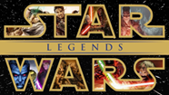

Disney acquired Lucasfilm for $4.05 billion on October 30, 2012, a deal that included the Star Wars franchise, LucasArts, Industrial Light & Magic, and Skywalker Sound. Founder George Lucas sold the company so he could pass Star Wars to a new generation.
After Disney bought Lucasfilm, the most significant change was declaring the vast majority of previously existing lore, now called the Expanded Universe (EU), as non-canon. This meant that stories from books, comics, and games, including characters like Darth Bane and concepts like the Reconquest of Ryloth, were wiped out to make way for new stories and a fresh continuity for the sequel films.